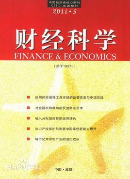
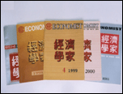

截至2015年4月，学校拥有教育部人文社会科学重点研究基地1个，2011协同创新中心1个，四川省重点实验室1个，建有其他研究机构25个。
教育部人文社会科学重点研究基地：中国金融研究中心
2011协同创新中心：金融安全协同创新中心
四川省重点实验室：金融智能与金融工程实验室
其他研究平台：中国家庭金融调查与研究中心、四川省居民消费研究会、马克思主义经济学研究院、财政经济研究所、金融数学研究所、人力资源管理研究所、数学建模研究所、西方经济学研究所、外国语言学与应用语言学研究所……
二、研究成果
1、历年科研情况
2、部分科研机构科研成果
（1）中国金融研究中心
据2015年12月中心官网信息显示，2000年以来，中心以金融风险与金融安全、转型金融理论、金融学说等为研究特色，产出了一批较重要的成果，承担了国家社科基金、国家自然科学基金、教育部等80多项课题，在 《经济研究》、 《管理世界》等高水平刊物上发表论文80多篇；出版专著和教材70多部；获国家级、省部级以上奖项30多项，其中二等奖以上16项。
（2）中国西部经济研究中心
据2015年12月中心官网信息显示，该中心承担了国家级课题10多项，省（部）级课题70多项，地方政府以及大型企业委托的研究项目和横向研究课题30多项，出版专著30余本。在《经济研究》、《经济学动态》、《经济学家》、《光明日报》、《改革》、《中国农村经济》、《人口研究》等刊物公开发表论文数百篇，获中宣部“五个一工程”奖、四川省哲学社会科学优秀成果奖等省部级奖项30余项。
三、学术资源
1、馆藏资源
2、出版物

《经济学家》杂志是由中国经济学界一批著名专家学者共同倡议创办，由中华人民共和国教育部所属的西南财经大学承办的大型经济理论刊物。主要发表经济学界新近的理论研究成果，包括马克思主义经济学基本理论的
研究；社会主义市场经济运行及其机制的研究；中国经济改革和经济发展的重大课题的研究；当代资本主义发展的新特点、新趋势研究；世界经济发展问题研究以及反映中国经济领域中的新情况、新问题的调查报告和当代国外各派经济理论的介绍和评价等等。该刊1995年6月评为四川省十佳社科期刊，同年12月荣获首届全国优秀社会科学期刊奖提名奖。1998年被全国经刊联授予“首届全国优秀经济期刊”，1999年9月被“全国高等学校文科学报研究会”评为“首届全国百强社科学报”，2000年8月获四川省第二届优秀期刊奖。2001年，我刊又再次荣获由中华人民共和国新闻出版署颁发的“中国期刊方阵”的双效期刊。
《财经科学》杂志是1957年创刊的西南地区最早的经济理论刊物，由教育部直属院校西南财经大学编辑出版。《财经科学》长期被列入全国经济类核心期刊，并被四川省新闻出版局评为四川省一级期刊。许多高水平的论文、研究报告被《新华文摘》、《中国人民大学报刊复印资料》、《高等学校文科学报文摘》以多种形式转载，并被南京大学《中文社会科学引文索引》（CSSCI）选为来源期刊。